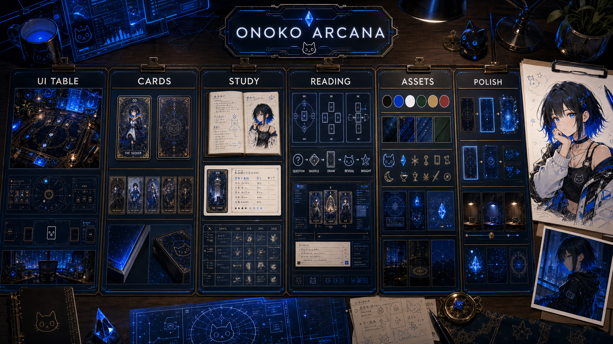
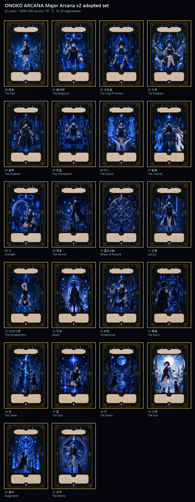
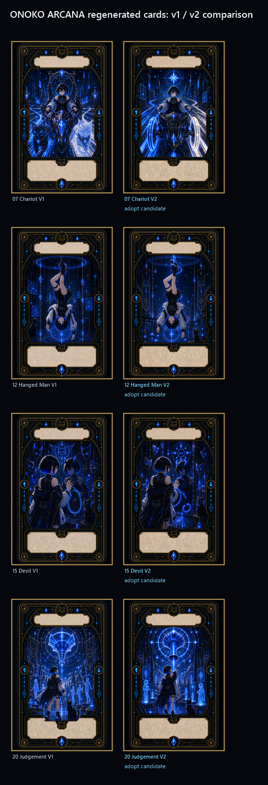

ONOKO ARCANA Unreal Roadmap
カンバンボード、生成カード、ONOKO参考素材、HTML一覧、確認レポートを、Unreal Engine版PCタロット学習ソフトへ接続するための研究ロードマップ。

結論
次工程は、追加カード量産ではなく、Unreal Engineで「3D占い卓 + 1枚引き + カード意味UI + ユーザーメモ保存」までを接続する縦断スライスに進むのが最も合理的です。現在の大アルカナ22枚は、最初のアプリ検証に十分な素材量です。
カードは 1024x1536px、比率 2:3。過度な縦長化は禁止。
ユーザーが先に自分の解釈を書き、その後にONOKO風の補助解釈を見る。
Unreal Engine 5.7系、Blueprint-first、UMG/Common UI、Texture2Dカード運用。
素材コーパス


| 分類 | 主要ファイル | 扱い |
|---|---|---|
| カンバン | assets/design/onoko-arcana-design-kanban-v1-onoko.png | 世界観基準 |
| カード表面 | assets/generated/card-fronts/major-00... から major-21... | 大アルカナ22枚 |
| カード裏面 | assets/generated/card-backs/card-back-b-production-v1.png | 本命裏面 |
| カードデータ | data/major-arcana-cards.json | 番号、名称、キーワード、学習焦点 |
| 確認資料 | reports/onoko-arcana-major-arcana-gallery.html | ブラウザ確認用 |
Unreal実装ロードマップ
Unreal Engine導入確認、プロジェクト作成、カード裏面と00/01/07 v2のTexture import、2:3カードMesh検証。
3D占い卓、デッキ、1枚引きスロット、カードドロー、正逆判定、カード詳細パネル。
質問入力、ユーザー解釈メモ、ガイド表示、SaveGame履歴、再起動後の復元。
3枚引き、カード一覧、学習モード、正位置/逆位置比較。
ホログラムリング、カード発光、猫/結晶アイコン、環境光、短い演出。
Windows内部ビルド、スモークテスト、既知問題レポート。
小アルカナ、追加スプレッド、ONOKOガイド強化へ進むか判定。
品質ゲート
寸法、比率、画像内テキストなし、命名、v2参照の整合性を確認。
shuffle, draw, reveal, note, save, reset が一操作で分かる。
ガイドより先にユーザー解釈を書ける構造を守る。
黒、白、青、鈍金、猫、結晶、観測線がONOKOらしさとして機能する。
カードデータ、Texture参照、保存スキーマが破綻しない。
ONOKO ORACLEとは混同せず、ARCANAはタロット学習に特化。
関連文書
| 文書 | パス |
|---|---|
| 論文形式ロードマップ本文 | docs/roadmap/ONOKO_ARCANA_UNREAL_RESEARCH_ROADMAP_2026-05-31.md |
| 要件定義セッション | .agent/requirements/20260531-0552-unreal-roadmap/ |
| デザインカンバン | docs/design/overall-design-kanban.md |
| カード制作基準 | docs/design/card-front-production-v1.md |
| 大アルカナ確認レポート | reports/onoko-arcana-major-arcana-visual-check-2026-05-31.md |
公式参照
Unreal Engine方針は、2026-05-31時点でEpic公式ドキュメントを参照して整理しています。